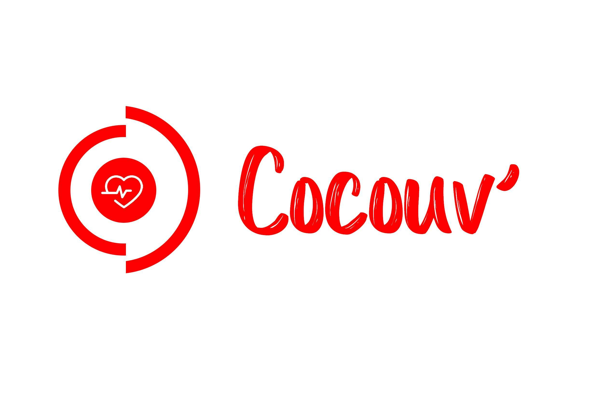

Cocouv', la couverture connectée pour les sans-abris
Le contexte: Chiffres & Problèmes
200 000 : c'est le nombre de sans-abris en France aujourd'hui
500 : c'est le nombre de sans-abris décédés en France en 2016, et ce notamment à cause du froid.
Notre problème aujourd’hui c’est qu’il y a plus de 200 000 personnes qui n’ont pas de toit, aucun accompagnement médical et qui sont livrées à elles-mêmes dans la rue. Cette population est d’autant plus difficile à aider puisqu’elle est extrêmement mobile.
Notre Solution: le Projet Cocouv'

La solution que nous avons imaginé peut aider les plus démunis et diminuer leur situation précaire, nous vous présentons Cocouv’.
Notre projet offre aux personnes sans abri, une couverture de vie connectée.
Il sera composé de deux matériaux : une partie intérieure en tissu recyclé gardant la chaleur, une seconde plus élaborée, lavable, waterproof, ignifugée et ultra résistante. Grâce à cette couverture nous pourrons analyser trois paramètres vitaux en temps réel : la température corporelle, le rythme cardiaque et le taux d’oxygénation du sang.
Notre projet est également composé d’un système de géolocalisation, alertant les bénévoles en cas de fluctuation anormale des variables et facilitant leur rapidité d’intervention. Dans une optique de récolter de la data, nous avons pour but de mettre en place l’anonymisation des données voire même la pseudonymisation à long terme.
Les Bénéfices
Nos objectifs sont multiples :
A la fois, proposer un produit qui protège du froid, qui permet un suivi médical précis et qui crée un lien social, c’est donc un véritable compagnon de vie que nous offrons aux sans abris et qui les accompagnera au quotidien.
Les bénéfices premiers seront une diminution de la mortalité, une optimisation des maraudes soit un gain de temps, d’argent et de productivité; et bien évidemment un prolongement de la relation humaine.
Pour un sans-abri, Cocouv’ est un bien chaleureux, affectif et bienveillant offrant un réel sentiment de sécurité.
Partis d’un constat accablant, nous avons su allier technologie et mobilité mais aussi santé et social.
Cocouv’ est donc un créateur de lien apportant une réponse novatrice et humaniste. Cocouv’ le cocon, apportant confort & compagnie.
Qui sommes nous ?
Nous sommes une équipe composée de 9 personnes:
4 étudiants de l'EDHEC Business School : Marion Faburel, Clément Lorriaux, Adrien Ollivier et Tamara Pariot.
2 étudiants de l'IFSI Croix Rouge : Samuel Noir et Sandrine Rouanet-Mehouas.
2 étudiants d'EPITECH : Maxime Gallo et Ethan Kerdelhue.
1 porteur de projet du Secours Populaire : Jean Stellittano.